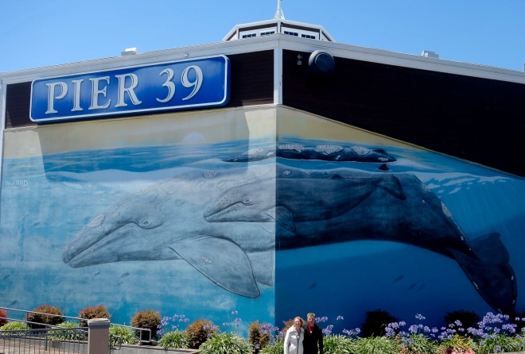

In Search of Wyland Walls

When our adventure started back in 2010 our first wall was close to home at Pier 39 in San Francisco. There were 2 walls in that area but due to construction around the aquarium it appeared that “Grays off the San Francisco Coast”, wall number 61 was extinct which was very disappointing.
Of course, some days surprise you. While on a trip to San Francisco with my Mom, we’re walking around Pier 39 and walk right by what is clearly a Wyland Wall in really good shape. We can’t tell if the was was extinct and Wyland re-painted it or whether it was just covered up by the construction but it’s in great shape and we were glad to add it to our list.
Specs of wall 61 are:
Pier 39-Aquarium
Beach & Embarcadero, Streets
San Francisco, California
68 Feet Long x 20 Feet High
Dedicated September 5th, 1994
Excerpt from @wylandfoundation on Instagram
The second wall at @pier39 was smaller than the first one, but it still moves us as much as the first. It’s next to the entrance to the pier so anyone who walks in can’t possibly miss it.
The actual design of the wall presented an interesting “angle” to this mural. It presented a challenge in that Wyland actually wrapped a gray whale around a slight bend in the middle of the wall. Because the mural was situated where the late afternoon sun hit the wall each day, Wyland used warm yellows and oranges for a beautiful sunset scene above the surface.
This was only the second time Wyland used sunset colors for a Whaling Wall. The first was in Seattle. When the light from the afternoon sun spreads across the mural, the painting comes alive in a very natural way. It’s as if the viewer and the whales are sharing the same sunset!